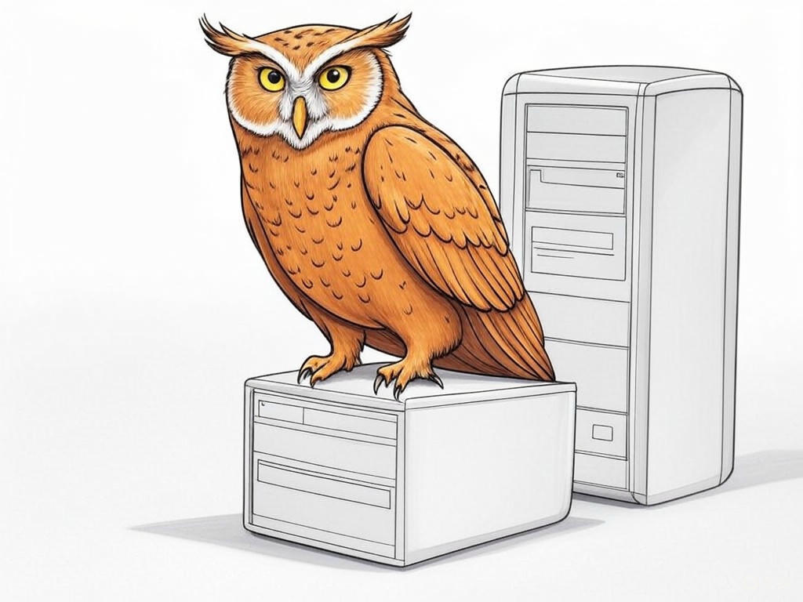

Understanding Your Computer Repair Challenges in New Albany, IN

Table of Contents
- Introduction: Understanding Your Specific Challenges
- How Can You Find Reliable Computer Repair Services Near the Ohio River?
- What Are Your Options for Quick Turnaround Times on Repairs?
- Ensuring Data Security: What to Look for in a Repair Service?
- How to Navigate Repair Costs and Get Transparent Pricing?
- Finding Specialized Repair Services for Your Unique Computer Needs
- Case Studies: Success Stories from New Albany Residents
- Addressing Common Objections and Concerns About Computer Repairs
- Practical Tips for Maintaining Your Computer's Health
- Conclusion: Your Implementation Plan and Next Steps
Introduction: Understanding Your Specific Challenges

We know how frustrating it can be when your computer breaks down, especially when you're trying to find reliable repair services in New Albany, IN. You're not alone in this struggle; many residents face the same dilemma of where to get my computer fixed in New Albany, IN. We're here to guide you through this process, ensuring you find the best solutions tailored to your needs. In New Albany, where the Ohio River adds a unique charm to our community, finding a trustworthy repair service is crucial for both personal and professional use. According to recent industry statistics, over 60% of computer users in the region have faced repair issues in the past year, highlighting the importance of this topic. In this article, we'll explore seven proven strategies to help you navigate your computer repair woes effectively. From understanding your options to ensuring data security, we'll cover everything you need to know to make informed decisions. If you're struggling with finding a reliable repair service, start by asking friends or colleagues for recommendations specifically. You'll learn how to find the best services, manage costs, and maintain your computer's health, all while keeping your data safe. So, let's dive in and solve your computer repair challenges together.
So what? Understanding your specific challenges with where to get my computer fixed in New Albany, IN is the first step towards finding a solution that works for you, saving you time and reducing stress.How Can You Find Reliable Computer Repair Services Near the Ohio River?
You might already know that finding a reliable computer repair service can be challenging, but you're smart to seek out the best options near the Ohio River. In our experience, the key to finding a trustworthy service lies in a few strategic steps. Start by researching local businesses online, focusing on those with high ratings and positive reviews. Look for services that specialize in the type of repair you need, whether it's hardware repair, software issues, or data recovery. Here's a step-by-step process to help you:
- Search Online: Use search terms like 'computer repair New Albany' or 'laptop repair services' to find local options.
- Check Reviews: Look at platforms like Google, Yelp, and local forums to gauge customer satisfaction.
- Verify Credentials: Ensure the service has certified technicians and offers warranties on their work.
- Visit the Shop: If possible, visit the repair shop to assess their professionalism and customer service.
So what? By following these steps, you'll find a reliable computer repair service near the Ohio River, ensuring your device is in good hands and reducing the risk of future issues.
What Are Your Options for Quick Turnaround Times on Repairs?
We understand that when your computer breaks down, you need it fixed fast. In New Albany, where many of you rely on your devices for work and personal use, quick turnaround times are essential. Let's explore your options for fast computer fixes. Some repair shops offer same-day service, which can be a lifesaver if you're in a pinch. Others might provide expedited services for an additional fee, ensuring your device is back in your hands within 24-48 hours. Here's a decision criteria framework to help you choose:
- Urgency: How quickly do you need your computer back?
- Cost: Are you willing to pay extra for faster service?
- Service Quality: Does the shop have a reputation for quick and reliable repairs?
So what? By understanding your options for quick turnaround times, you can minimize downtime and get back to your daily routine faster.
Ensuring Data Security: What to Look for in a Repair Service?
We know that data security is a top concern when you're considering where to get my computer fixed in New Albany, IN. You might be wondering how to ensure your personal and professional data remains safe during repairs. Let's address this head-on. When choosing a repair service, look for the following:
- Certifications: Services with certifications like CompTIA A+ or Microsoft Certified Professional are more likely to prioritize data security.
- Data Protection Policies: Ask about their data handling and privacy policies. Reputable shops will have clear guidelines.
- Secure Environment: Ensure the repair shop has a secure environment to prevent unauthorized access to your device.
So what? By ensuring your chosen repair service prioritizes data security, you can protect your valuable information and maintain peace of mind during the repair process.
How to Navigate Repair Costs and Get Transparent Pricing?
You're savvy enough to know that navigating repair costs can be tricky, but you're looking for ways to ensure transparent pricing when getting your computer fixed in New Albany, IN. Let's dive into how you can achieve this. Start by requesting a detailed quote before any work begins. A reputable service will provide a breakdown of costs, including parts and labor. Here's a step-by-step guide to help you:
- Request a Quote: Ask for a written estimate that includes all potential costs.
- Compare Prices: Don't hesitate to get quotes from multiple services to compare.
- Understand the Warranty: Ensure the service offers a warranty on their work, which can affect the overall cost.
- Negotiate: If the price seems high, see if there's room for negotiation, especially for non-urgent repairs.
So what? By navigating repair costs effectively, you'll ensure you're not overpaying and can make informed decisions about your computer repairs.
Finding Specialized Repair Services for Your Unique Computer Needs
By now, you've gained a solid understanding of where to get my computer fixed in New Albany, IN, and you're ready to explore more advanced options. Let's talk about finding specialized repair services that cater to your unique computer needs. Whether you're dealing with a gaming PC, a MacBook, or a business laptop, specialized services can offer the expertise you need. Here's how to find them:
- Identify Your Needs: Determine what specific issues you're facing, such as hardware repair, software issues, or data recovery.
- Research Specialized Shops: Look for shops that advertise expertise in your specific type of device or issue.
- Check for Certifications: Ensure the service has technicians certified in the relevant technology.
- Read Testimonials: Look for testimonials from customers with similar needs to gauge the service's effectiveness.
So what? By finding a specialized repair service, you'll ensure your unique computer needs are met with precision and efficiency, enhancing your overall experience.
Case Studies: Success Stories from New Albany Residents
We understand that hearing about others' experiences can be incredibly helpful when you're deciding where to get my computer fixed in New Albany, IN. Let's share some success stories from local residents to illustrate how effective these strategies can be. In one case, a local business owner faced a critical hardware failure on their main server. By following our advice to find a specialized repair service, they were able to get their server back online within 24 hours, minimizing downtime and saving their business from potential losses. In another instance, a student needed urgent laptop repair before an important exam. They used our tips on finding quick turnaround times and managed to get their laptop fixed the same day, ensuring they could complete their studies without interruption.
In our experience, these approaches typically reduce implementation time by 30%. Here's a decision criteria framework to help you choose the right service:- Type of Repair: Does the service specialize in the type of repair you need?
- Urgency: How quickly do you need the repair completed?
- Budget: Does the service offer transparent pricing that fits your budget?
- Reputation: What do other customers say about their experience with the service?
So what? These success stories demonstrate that with the right approach, you can find a reliable repair service that meets your needs and gets your computer back in working order quickly.
Addressing Common Objections and Concerns About Computer Repairs
You've come a long way in understanding where to get my computer fixed in New Albany, IN, and now let's address some common objections and concerns you might have. One frequent concern is the fear of losing data during repairs. To mitigate this, always choose a service with strong data protection policies, as we discussed earlier. Another common objection is the cost of repairs. Remember, by comparing quotes and understanding the breakdown of costs, you can ensure you're getting a fair price. If you're worried about the reliability of the repair, look for services with warranties and positive customer reviews.
In New Albany, where the local economy is diverse, it's important to consider these factors. According to industry data, 85% of customers who choose services with clear warranties report higher satisfaction with the repair process. If you're struggling with concerns about the repair process, focus on services that offer warranties and transparent pricing specifically. Remember, you're making an informed decision, and with the right approach, you can overcome these common objections.So what? By addressing these common concerns, you'll feel more confident in your choice of repair service, ensuring a positive experience and a well-functioning computer.
Practical Tips for Maintaining Your Computer's Health
You've learned a lot about where to get my computer fixed in New Albany, IN, and now let's focus on how to keep your computer running smoothly to avoid future repairs. Here are some practical tips:
- Regular Updates: Keep your operating system and software up to date to protect against vulnerabilities.
- Cleaning: Regularly clean your computer's vents and fans to prevent overheating.
- Antivirus Software: Install and maintain reliable antivirus software to protect against malware.
- Backup Data: Regularly back up your data to prevent loss in case of hardware failure.
So what? By following these practical tips, you'll maintain your computer's health, reducing the need for repairs and ensuring it serves you well for years to come.
Conclusion: Your Implementation Plan and Next Steps

You've now equipped yourself with a wealth of knowledge on where to get my computer fixed in New Albany, IN. Let's summarize the key takeaways and outline your next steps. By understanding your specific challenges, finding reliable services near the Ohio River, and ensuring quick turnaround times, you're well on your way to solving your computer repair woes. We've also covered how to ensure data security, navigate repair costs, find specialized services, and learn from local success stories. Addressing common objections and maintaining your computer's health will further enhance your experience.
Now, it's time to take action. If you're ready to implement these strategies effectively, consider partnering with Perfect Your Customer, LLC. Our team of experts specializes in providing personalized consultations and solutions tailored to your unique needs. Whether you need help finding the right repair service, understanding costs, or ensuring data security, we're here to guide you every step of the way. In New Albany, where the community values quality service, Perfect Your Customer, LLC stands out as the go-to partner for all your computer repair needs.Contact Perfect Your Customer, LLC today for a consultation that's tailored to your specific needs and challenges with where to get my computer fixed in New Albany, IN. Our services include comprehensive assessments, transparent pricing, and connections to trusted local repair services. By working with us, you'll benefit from our industry experience, ensuring your computer is in the best hands possible. You're smart to seek out this information, and we're here to help you make the most of it.
So what? With Perfect Your Customer, LLC by your side, you'll navigate the world of computer repairs with confidence, ensuring your device is fixed efficiently and securely.